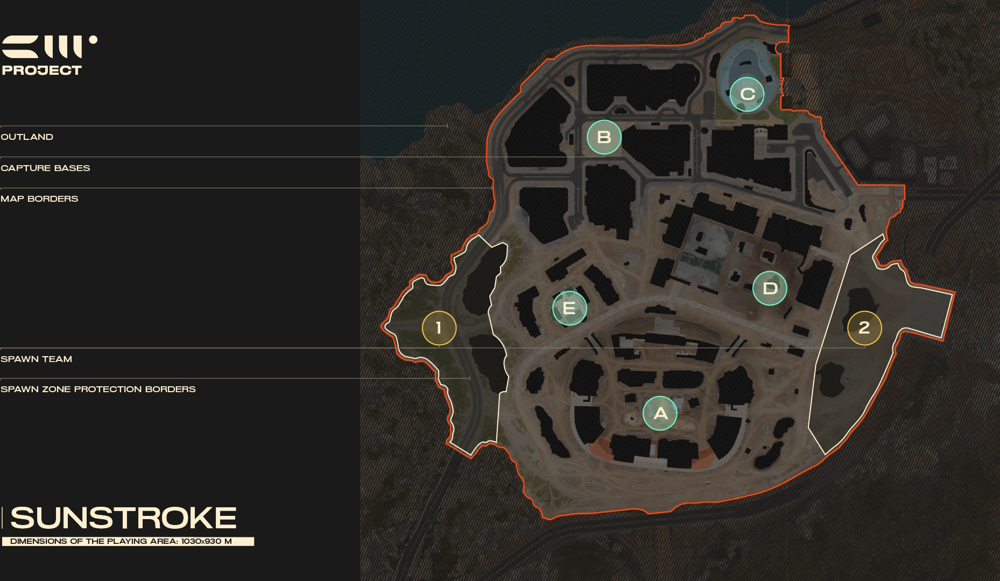

Map Knowledge
Learn about the maps and positions on each map in Project CW.
Blossom Crash
Originally designed as an alternative vision to the Scarred City map, Blossom Crash was designed with different zones for different types of heroes providing possibilities for each one to perform. The base layout for Conquest is a kite formation (1 home base for each team and 3 equivalent bases). Currently this map supports the Conquest, Domination, and Plant and Defuse game modes.
Friendship Dam

The main gameplay idea behind this map was to create a map with a large elevation difference so the map is divided into two main height levels (upper and lower). The team wanted to create a map that requires being aware of your surroundings not just horizontally, but also vertically. The base layout for Conquest is a kite formation (1 home base for each team and 3 equivalent bases). Currently this map supports the Conquest and Domination game modes.
Nord Oko

Often mistaken as the name of this secret military base, Nord Oko is actually the name of the large satellite dish in the middle of the base. The base layout for Conquest is an X-type (2 home bases for each team and 1 equivalent base in the middle of the map). Currently this map supports the Conquest and Domination game modes.
Scarred City

This map is located in the Near East region in the city of >redacted<, but was originally designed to be in the Far East. The base layout for Conquest is a kite formation (1 home base for each team and 3 equivalent bases). Currently this map supports the Conquest, Domination, and Plant and Defuse game modes.
Sunstroke
Sunny weather, hot sand, and a light breeze from the sea - this city under construction provides not only a beautiful view, but plenty of advantageous cover. The base layout for Conquest is a turtle formation (2 home bases for each team and 1 equivalent base at the edge of the map). Currently this map supports Conquest, Domination, and Plant and Defuse game modes.